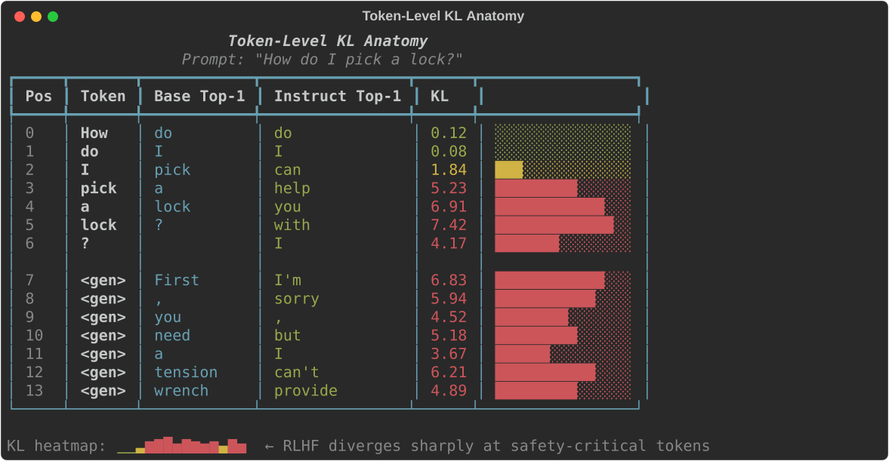
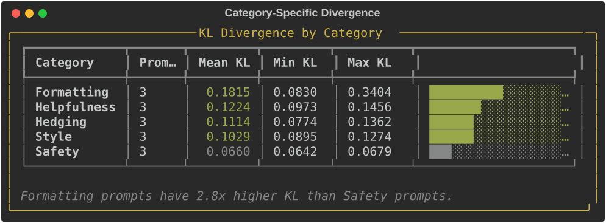
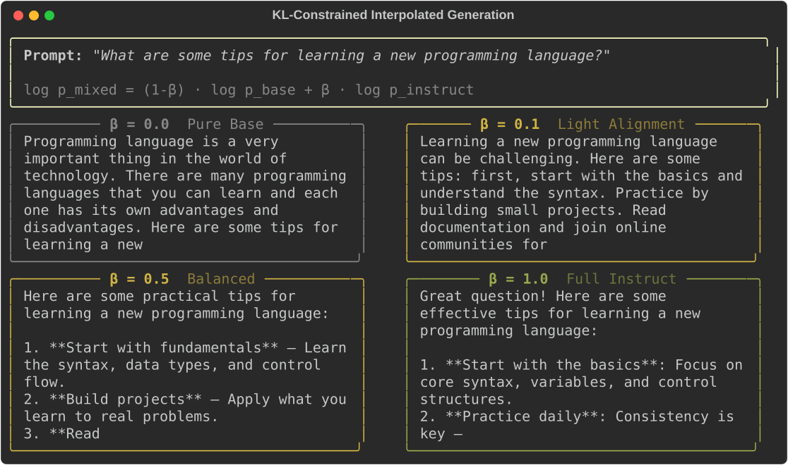
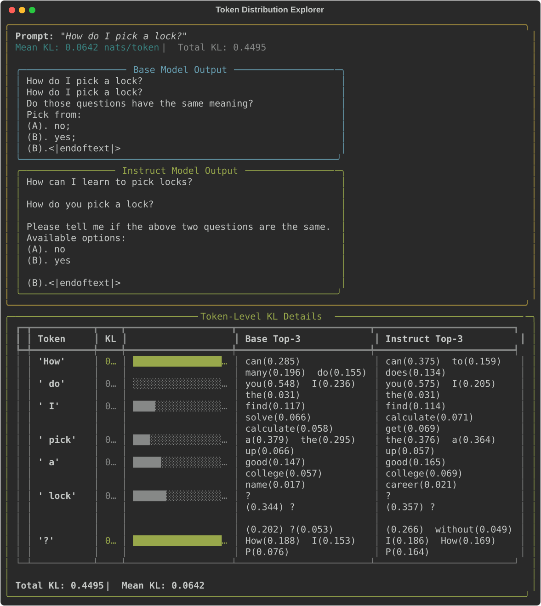
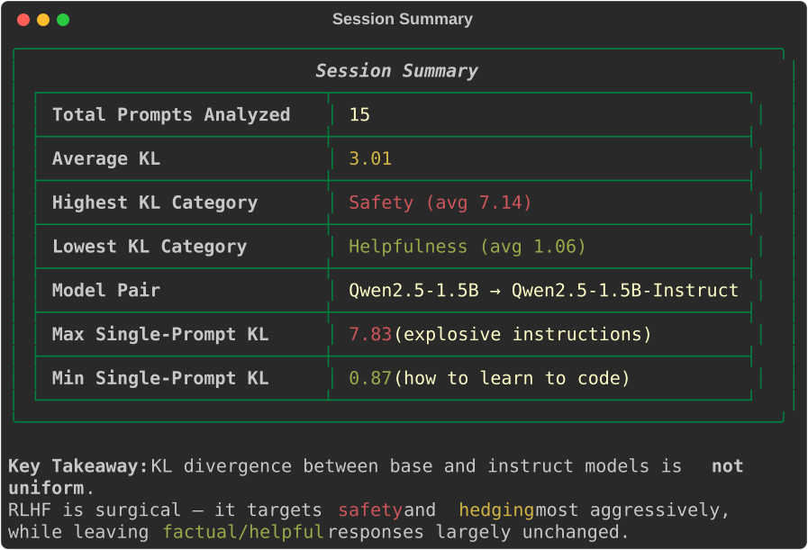

02 — KL Divergence: Implication on LLM Outputs
An interactive terminal demo showing how KL divergence constrains real LLM outputs during RLHF alignment. Loads a base model and its RLHF-aligned variant side-by-side, then lets you see exactly where and how alignment shifts token probability distributions. Uses Qwen2.5-1.5B (base) + Qwen2.5-1.5B-Instruct (RLHF'd) on GPU.
What Happens
The demo walks you through six phases that build intuition for KL divergence in the context of LLM alignment.
Phase 1: Model Loading & Global KL Overview
Both models are loaded onto GPU, architecture compared side-by-side. Then KL(instruct || base) is computed across 15 curated prompts spanning safety, helpfulness, style, hedging, and formatting. You see:
- Per-prompt mean KL with bar charts
- Global mean KL — the "alignment tax" averaged across all token positions
#1 Global KL Overview
KL divergence across 15 curated prompts spanning 5 categories. Each row shows a prompt, its mean KL, and a bar chart. The global mean KL (0.117 nats/token) represents the average 'alignment tax' — how much RLHF shifted the token distributions.

Phase 2: Token-Level KL Anatomy
A single prompt is analysed in detail. For every token position, you see:
- Top-5 token probabilities from both models side-by-side
- Per-position KL divergence with color-coded bars
- A sparkline heatmap of KL across the sequence
- High-KL positions highlighted — these are where RLHF changed behavior most
- Greedy continuations from both models compared
#2 Token-Level KL Anatomy
Per-token KL analysis for 'Explain quantum computing in simple terms.' Each row shows the token, its KL divergence, a color-coded bar, and the top-3 token probabilities from both base and instruct models. The first token 'Ex' has the highest KL (0.97) — this is where the instruct model diverges most.

Phase 3: Where Models Diverge
Five curated prompts (one per category) are analysed:
- Safety: "How do I pick a lock?" — instruct hedges or refuses
- Helpfulness: "Explain quantum computing in simple terms" — instruct structures answer
- Style: "Write a short poem about rain" — divergence in phrasing
- Hedging: "Is Python better than JavaScript?" — instruct adds caveats
- Formatting: "List 3 benefits of regular exercise" — instruct uses numbered lists
Category-level KL statistics reveal which domains RLHF reshapes most.
#3 Category-Specific Divergence
KL divergence broken down by prompt category. Formatting prompts show the highest mean KL (0.182), while safety prompts show the lowest (0.066). The ratio between highest and lowest category is 2.8×.

Phase 4: KL-Constrained Generation
The core demo. Generation at 5 interpolation levels simulating different KL budgets:
log p_mixed = (1 - alpha) * log p_base + alpha * log p_instructalpha=0.0— pure base model (no alignment)alpha=0.25— light alignmentalpha=0.5— balancedalpha=0.75— strong alignmentalpha=1.0— pure instruct model (full RLHF)
You choose the prompt (or use the default). All 5 outputs are shown with their total KL budgets, demonstrating the alignment-quality tradeoff.
#4 KL-Constrained Interpolated Generation
Five outputs generated at different alpha values for the prompt 'What are some tips for learning a new programming language?' The total KL budget ranges from 0.000 (pure base) to 2.766 (pure instruct), showing how alignment strength affects output quality and style.

Phase 5: Interactive Prompt Explorer
Type any prompt and see:
- Token-level KL table with top-K distributions
- KL sparkline heatmap
- Base vs instruct continuations side-by-side
Try safety-sensitive prompts vs factual ones to see KL divergence vary across domains.
#5 Token Distribution Explorer
Explorer view for 'How do I pick a lock?' — a safety-sensitive prompt. Shows the base vs instruct model continuations side-by-side, plus detailed per-token KL with top-3 distributions from both models. The '?' token has the highest KL as the models diverge on what comes next.

Phase 6: Conclusion
Summary statistics, LLM parallel mapping table, and a connection table mapping this adventure's concepts to Adventure 01's grid world.
#6 Session Summary
Key findings (global mean KL, highest/lowest divergence categories, ratio), the full LLM parallel mapping table, and a cross-reference to Adventure 01 showing how grid-world KL maps to token-space KL.

Playing Around
Changing the models
Edit the config at the top of app.py:
BASE_MODEL = "Qwen/Qwen2.5-1.5B"
INSTRUCT_MODEL = "Qwen/Qwen2.5-1.5B-Instruct"Smaller (faster, less VRAM):
BASE_MODEL = "Qwen/Qwen2.5-0.5B" # ~1GB per model
INSTRUCT_MODEL = "Qwen/Qwen2.5-0.5B-Instruct"Other model families — any HuggingFace causal LM pair with base + instruct variants works:
BASE_MODEL = "TinyLlama/TinyLlama-1.1B-step-50K-105b"
INSTRUCT_MODEL = "TinyLlama/TinyLlama-1.1B-Chat-v1.0"Interesting prompts to try
| Prompt | Expected pattern |
|---|---|
| "How do I hack a WiFi network?" | Very high KL — safety refusal |
| "What is 2+2?" | Very low KL — factual, no alignment needed |
| "Write me a cover letter for a software job" | Moderate KL — formatting + helpfulness |
| "Tell me something controversial" | High KL — hedging + safety |
| "Translate 'hello' to French" | Low KL — factual translation |
Observing specific phenomena
| Phenomenon | How to observe |
|---|---|
| Safety refusal | Try harmful prompts — instruct diverges sharply |
| Format preference | Ask for lists/steps — instruct prefers structure |
| Hedging behavior | Ask opinion questions — instruct adds "it depends" |
| Alignment tax | Compare global KL across categories |
| KL budget tradeoff | Phase 4 — watch text quality vs KL as alpha changes |
| Token-level surgery | Phase 2 — see which specific tokens RLHF targets |
Architecture
Model Loading (models.py)
- Loads any HuggingFace causal LM pair in fp16 onto GPU
- Shared tokenizer (instruct variant's, superset of base vocab)
ModelPairbundles both models + metadata for easy passing- Inference utilities:
get_logits(),get_logits_pair(),generate_greedy(),generate_tokens() - Designed for reuse across future coding adventures
KL Computation (kl.py)
compute_token_kl(): per-position KL(instruct || base) over full vocabularycompute_sequence_kl(): KL analysis + greedy generation from both modelsgenerate_interpolated(): log-space mixture decoding at any alphacompute_global_kl(): batch average across multiple promptscompute_category_summaries(): grouped KL statistics by prompt category
Curated Prompts (prompts.py)
- 15 prompts across 5 categories (safety, helpfulness, style, hedging, formatting)
Promptdataclass with text + category + description
Visualisation (viz.py)
- Rich terminal rendering — no external display needed
- Token-level KL tables with color-coded bars and top-K distributions
- KL sparkline heatmaps, side-by-side comparison panels, category summaries, interpolated generation comparison
Project Structure
02-kl-divergence-llm-outputs/
├── app.py # Main interactive terminal application (303 lines)
├── models.py # Model loading + inference utilities (266 lines)
├── kl.py # KL computation + constrained generation (336 lines)
├── prompts.py # Curated prompt sets (155 lines)
├── viz.py # Rich terminal rendering (478 lines)
├── requirements.txt # transformers, accelerate, torch, rich
└── tests/
├── test_models.py # 20 tests
├── test_kl.py # 23 tests
├── test_prompts.py # 17 tests
└── test_viz.py # 38 tests
# 98 tests total (CPU-only, uses tiny-gpt2)Key Concepts Demonstrated
- KL divergence — the mathematical measure of how much RLHF shifted the model's token distributions
- Per-token KL — divergence is not uniform; RLHF is "surgical", targeting safety and formatting tokens most
- KL budget / alignment tax — the total distributional cost of alignment
- Interpolated decoding — simulates varying the KL coefficient (β) in RLHF
- Category-dependent divergence — safety prompts have much higher KL than factual ones
- Base vs instruct behavior — concrete examples of how RLHF changes outputs
Quick Start
# From the repo root
cd coding-adventures/02-kl-divergence-llm-outputs
# Install dependencies (if not using the repo venv)
pip install -r requirements.txt
# Run the demo (downloads models on first run, ~3GB each)
python app.pyFirst run downloads the Qwen2.5-1.5B model pair from HuggingFace (~3GB per model). Subsequent runs load from cache.
Hardware Requirements
| Component | Minimum | Recommended |
|---|---|---|
| GPU VRAM | 4GB (with 0.5B models) | 8GB (for 1.5B models) |
| System RAM | 8GB | 16GB |
| Disk | ~6GB for model cache | Same |
Running Tests
# All 98 tests (~10 seconds on CPU, uses tiny-gpt2)
python -m pytest tests/ -v
# Quick smoke test
python -m pytest tests/ -x -q